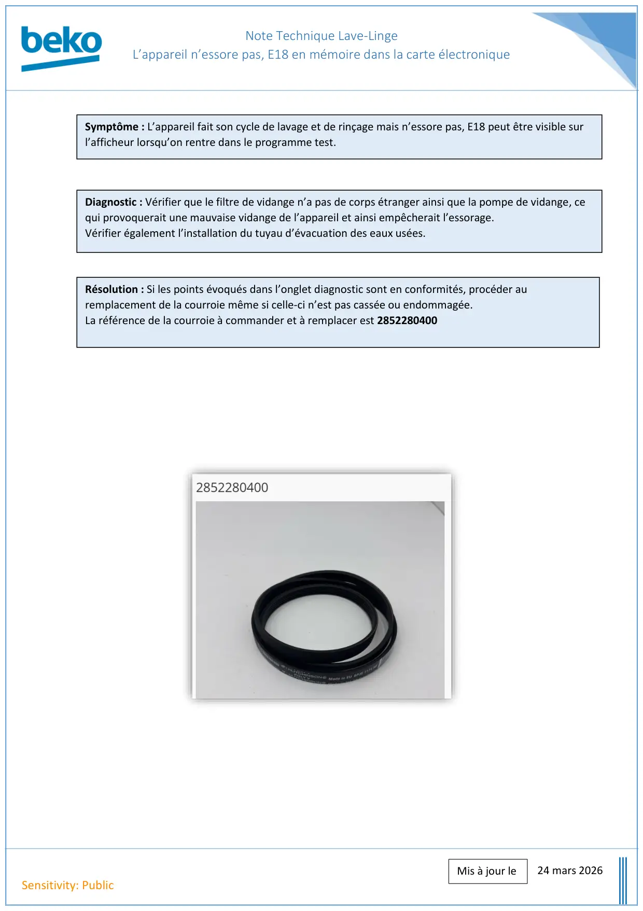
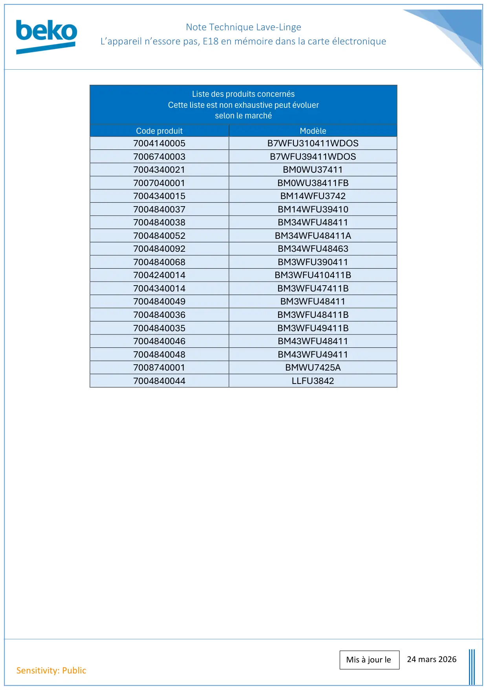

Note Technique Lave Linge Pas d Essorage E18 En Mémoire Dans La Carte Electronique

Note Technique Lave-LingeL’appareil n’essore pas, E18 en mémoire dans la carte électronique24 mars 2026Sensitivity: PublicMis à jour leSymptôme : L’appareil fait son cycle de lavage et de rinçage mais n’essore pas, E18 peut être visible surl’afficheur lorsqu’on rentre dans le programme test.Diagnostic : Vérifier que le filtre de vidange n’a pas de corps étranger ainsi que la pompe de vidange, cequi provoquerait une mauvaise vidange de l’appareil et ainsi empêcherait l’essorage.Vérifier également l’installation du tuyau d’évacuation des eaux usées.Résolution : Si les points évoqués dans l’onglet diagnostic sont en conformités, procéder auremplacement de la courroie même si celle-ci n’est pas cassée ou endommagée.La référence de la courroie à commander et à remplacer est 2852280400
1 / 2
Note Technique Lave-LingeL’appareil n’essore pas, E18 en mémoire dans la carte électronique24 mars 2026Sensitivity: PublicMis à jour leListe des produits concernésCette liste est non exhaustive peut évoluerselon le marchéCode produitModèle7004140005B7WFU310411WDOS7006740003B7WFU39411WDOS7004340021BM0WU374117007040001BM0WU38411FB7004340015BM14WFU37427004840037BM14WFU394107004840038BM34WFU484117004840052BM34WFU48411A7004840092BM34WFU484637004840068BM3WFU3904117004240014BM3WFU410411B7004340014BM3WFU47411B7004840049BM3WFU484117004840036BM3WFU48411B7004840035BM3WFU49411B7004840046BM43WFU484117004840048BM43WFU494117008740001BMWU7425A7004840044LLFU3842
2 / 2